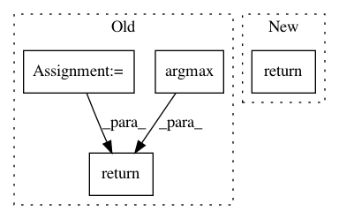

4065c4b2cc1ebe2eeb829e8ff3f620a4f510b096,nn_wtf/neural_network_graph.py,NeuralNetworkGraph,predict,#NeuralNetworkGraph#Any#Any#,123
Before Change
def predict(self, session, image):
if self.prediction_op is None:
self.prediction_op = tf.argmax(self.layers[-1], 1)
image_data = image.reshape(self.input_size)
feed_dict = {self.input_placeholder: [image_data]}
best = session.run(self.prediction_op, feed_dict)
return best[0]
def _add_layer(self, layer_name, in_units_size, out_units_size, input_layer, function=lambda x: x):
with tf.name_scope(layer_name):
After Change
def predict(self, session, image):
if self.predictor is None:
self.predictor = Predictor(self)
return self.predictor.predict(session, image)
def _add_layer(self, layer_name, in_units_size, out_units_size, input_layer, function=lambda x: x):
with tf.name_scope(layer_name):
weights = self._initialize_weights(in_units_size, out_units_size)
In pattern: SUPERPATTERN
Frequency: 3
Non-data size: 4
Instances
Project Name: lene/nn-wtf
Commit Name: 4065c4b2cc1ebe2eeb829e8ff3f620a4f510b096
Time: 2016-02-26
Author: lene.preuss@gmail.com
File Name: nn_wtf/neural_network_graph.py
Class Name: NeuralNetworkGraph
Method Name: predict
Project Name: keras-team/keras
Commit Name: 01d5e7bc4782daafcfa99e035c1bdbe13a985145
Time: 2016-07-16
Author: francois.chollet@gmail.com
File Name: examples/lstm_text_generation.py
Class Name:
Method Name: sample
Project Name: ray-project/ray
Commit Name: 4198db5038dd465a5d5db91b0ca84d98391aec2d
Time: 2020-03-04
Author: sven@anyscale.io
File Name: rllib/models/tf/tf_action_dist.py
Class Name: MultiCategorical
Method Name: deterministic_sample